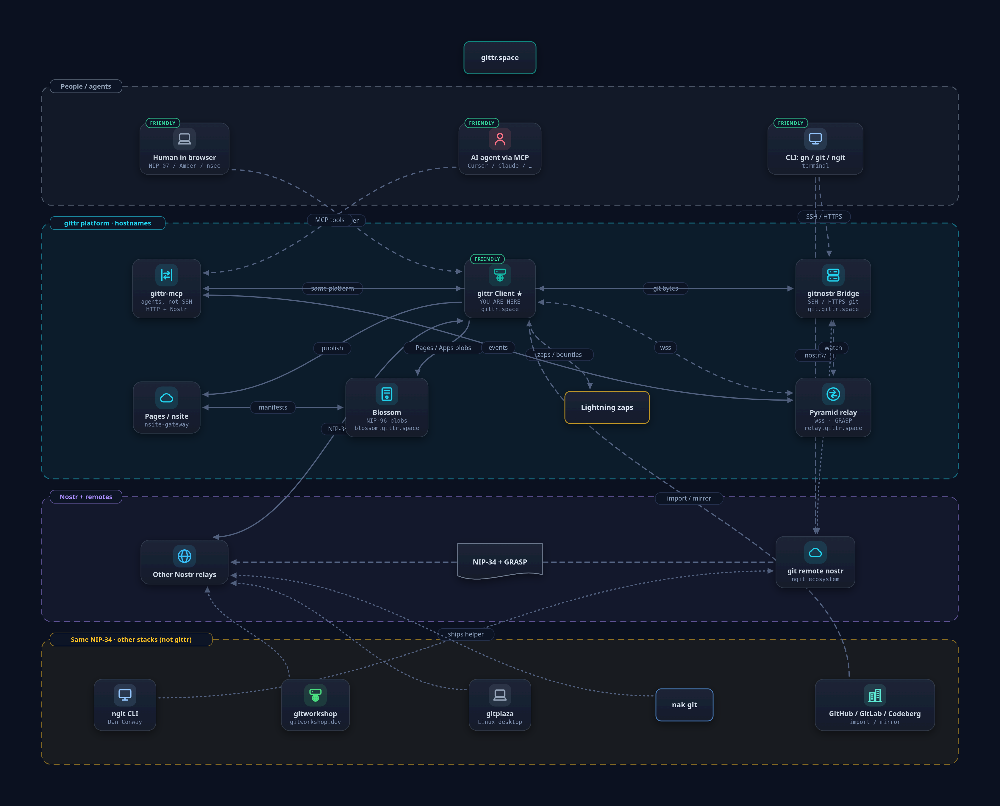

How to build a git Nostr client without starting from a blank panic.
This is the public face of
gittr-helper-tools:
the same snippets gittr uses, plus the screenshots so you can see
why they exist. Copy a folder. Adapt relays. Keep the attribution.
The boring README is still in the repo — this page is the fun door.
Clients that mix these up show empty PRs, 0 commits, or a clone URL that
is actually a relay. Two layers. Two jobs. Same hostname can wear both hats.
🟣 Git — the files
Commits, trees, blobs. You clone with git clone https://….
On Nostr git these HTTPS remotes are often GRASP hosts: git server
and relay. If one advertised clone is down, try the next.
They are advertised mirrors, not a magic always-in-sync cluster.
⚡ Nostr — the conversation
Announcements, PRs, issues, stars, pages, apps. These are events on
wss:// relays. Looking at git will never find a pull
request. Looking at a random social relay may miss the git announce.
Query both worlds on purpose.
Live gittr sidebar: Git Server is the preferred clone
from the announcement (not “where the original push happened”).
Clone URL (event) is the author’s advertised HTTPS remotes.
The path
Cookbook — ship a client in this order
1
Announce the repo
Kind 30617, empty content, tags only. Need a d
(repo id) and at least one full clone URL with
/npub…/repo.git. Optional 30618 for HEAD/state.
2
Fetch files from clone URLs
Parse every value on the clone tag (not only
tag[1]). Race remotes. Classify GRASP vs GitHub vs
someone’s NAS. Skip htree:// if you only speak HTTPS git.
3
Split GRASP hosts from ordinary relays
Same name can be git + wss. relay.gittr.space is the
Nostr relay; git bytes for gittr live on git.gittr.space.
Do not advertise the relay hostname as a clone.
4
Issues, PRs, comments
Kinds 1621 / 1618 / 1111 on
relays. Subscribe wider than “our one default relay” or you will
show empty threads that other clients can see.
5
Let humans sign in
Browser extension is NIP-07. Phone / Amber is NIP-46. Lightning
wallet control is NIP-47 (NWC). Three protocols. Three secrets.
Never put an nsec in the page.
6
Optional sparkle
Stars, watch lists, zaps, issue bounties, a static Page, an app
listing. Each has a snippet. Steal only what your product needs.
See it · steal it
Screenshot, then the snippet that makes that screen honest
A NIP-34 repo on gittr: Code tab, clone URLs in the sidebar, README
from git. The announcement event is the index card. The git remotes
are the warehouse.
Announce a reposnippets/nip34-repository-events
const event = {
kind: 30617,
content: "", // NIP-34: empty on purpose
tags: [
["d", "my-repo"],
["name", "My Repository"],
["description", "A cool repo"],
[
"clone",
"https://git.gittr.space/npub1…/my-repo.git",
"https://relay.ngit.dev/npub1…/my-repo.git",
],
["relays", "wss://relay.gittr.space", "wss://relay.ngit.dev"],
],
};
// Parsers: read EVERY value after index 0 on clone/relays.
// Older events used one tag row per URL — accept both.
GRASP vs normal relayssnippets/grasp-detection
export const GRASP_SERVERS_FOR_PUSHING = [
"git.gittr.space", // git bytes for gittr
"relay.ngit.dev",
"gitnostr.com",
"ngit.danconwaydev.com",
"git.shakespeare.diy",
];
// NOT a clone host:
// "relay.gittr.space" ← Pyramid wss relay only
const isGrasp = isGraspServer("wss://relay.ngit.dev");
// true: git HTTPS + Nostr on related hostnames
Sidebar split is a label, not two query engines. Grasp chips are
hosts that look like git+Nostr. Relays are wss addresses from the
announcement plus what this browser already connected. Live PR/issue
lookup uses a wider merged set.
Where do the files come from? Browser drafts, GitHub/GitLab,
self-hosted git, the gittr bridge, other GRASP, or Iris hashtree.
Helper-tools is the snippet, not a host.
Parse a clone URLsnippets/file-fetching
export type GitSourceType =
| "nostr-git" // GRASP https://host/npub/repo.git
| "github" | "codeberg" | "gitlab"
| "self-hosted-git" // Gitea / NAS / Freebox
| "hashtree" // htree:// — not HTTPS git
| "unknown";
// Host-only clones (https://git.example.com with no path)
// break other clients. Normalize before you publish.
// See snippets/clone-url-quality
Make a Page (this one)snippets/nip5a-gittr-pages
{
"kind": 35128,
"content": "",
"tags": [
["d", "helper-tools"], // 1–13 chars
["path", "/index.html", "<sha256>"],
["path", "/site.css", "<sha256>"],
["server", "https://blossom.gittr.space"],
["title", "Steal our homework"],
["relay", "wss://relay.gittr.space"]
]
}
// 1. Put index.html in the repo root
// 2. Upload bytes to Pages Blossom
// 3. Publish the manifest
// Apps/APKs do NOT go to blossom.gittr.space
gittr.space/pages lists
sites that actually have a homepage. Yours shows up after
Push Manifest on the repo sidebar.
Apps are a different sport: NIP-82 kinds 32267 /
30063 / 3063. Default download URL is the
forge Release. Optional pin to public Blossom — never Pages Blossom.
{
"kind": 9806,
"content": "{\"amount\":50000,\"status\":\"paid\",\"lnurl\":\"…\"}",
"tags": [
["e", "<issue-event-id>", "", "issue"],
["repo", "<entity>", "<repo-name>"],
["status", "paid"]
]
}
// Discovery on relays. Settlement on the host.
// PRs are kind 1618. Issues are 1621.
// Comments / threads often 1111.

The neighborhood: gittr client, gitnostr bridge, Pyramid relay,
Pages gateway, Blossom, plus gitworkshop / ngit / gitplaza.
Helper-tools ships the recipes, not another forge.
nostr://npub/repo is a helper URL for
git-remote-nostr, not a fourth copy of the git. Plain
git clone https://… is what most humans want.
Star and watchsnippets/nip25-stars-nip51-following
// Star = kind 7 reaction on the 30617 event id ("+")
// Watch = kind 10018 replaceable list
// a tags: "30617:<owner-hex>:<d>"
// Star needs the announcement event id from a WIDE
// relay set. Watching only needs the a-tag coordinate.
// Auth: NIP-07 in the browser, NIP-46 for Amber.
// Pay: NIP-47 nostr+walletconnect:// (not the signer)
Drawer
Every snippet, without the lecture
Each folder has a README plus TypeScript you can paste. No
@/ imports. Stub key storage yourself. Filter by mood:
Don't ship this (we already did, then we un-did it)
Host-only clone tags
https://git.example.com with no /owner/repo.git
makes gitworkshop and friends try to clone the hostname. Hide those
announces or repair them before publish.
SSH inside clone[] for a web client
Browsers cannot git-over-SSH. Keep git@ out of kind 30617
clone. Show SSH in the sidebar if you must.
Only reading tag[1]
gittr (and ngit-style clients) put several HTTPS URLs on one
clone row. If you only take the first extra cell, you
throw away the mirrors.
relay.gittr.space as a git remote
That hostname is the Nostr relay. On-disk repos for gittr live under
git.gittr.space. Mixing them makes the sidebar lie and
git fetch 404.
Pages Blossom vs Apps Blossom
blossom.gittr.space is static sites. APKs / AppImages go
to the forge or public Blossom (Primal / Ditto / Haven). Mixing them
is how you accidentally host installers on the Pages disk.
Do this instead
Copy one snippet folder. Point relays at your defaults plus a
discovery set (ngit, shakespeare, gitnostr, a general relay). Sign
with NIP-07 or NIP-46. Keep nsecs out of git. Then add sparkle.
Kinds
Sticker sheet
Tap a pill in the hero, or just steal the numbers.